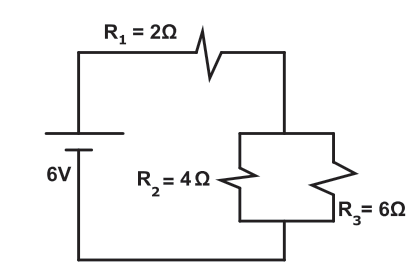
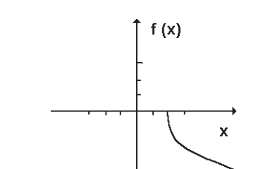
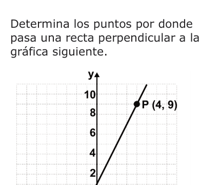
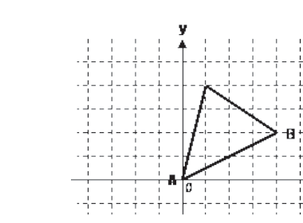

Simulacro — Examen de Ingreso a la Licenciatura UNAM Área 1
La respuesta correcta aparece en verde
Pregunta 1 (ID 1)
La tripulación del Apolo XI tuvo que recorrer en tres días la distancia de $3.8 \times 10^{15}$ km para llegar a la Luna. ¿Cuál fue la rapidez promedio de la nave?
A. $53 \times 10^{13} \ \frac{km}{día}$
B. $5.3 \times 10^{13} \ \frac{km}{h}$ ✓
C. $5.3 \times 10^{11} \ \frac{km}{h}$
D. $53 \times 10^{11} \ \frac{km}{día}$
Pregunta 2 (ID 2)
Un auto arranca con una aceleración constante de $1.8 \ \frac{m}{s^2}$; la velocidad del auto dos segundos después de iniciar su movimiento es de
A. $0.9 \ \frac{m}{s}$
B. $1.8 \ \frac{m}{s}$
C. $3.2 \ \frac{m}{s}$
D. $3.6 \ \frac{m}{s}$ ✓
Pregunta 3 (ID 3)
Una moneda de 10 gramos es colocada sobre un plano sin fricción. Si se desea producirle una aceleración de $5 \ \frac{m}{s^2}$, ¿cuál es la magnitud de la fuerza que se requiere aplicar?
A. 0.098 N
B. 0.05 N ✓
C. 2 N
D. 50 N
Pregunta 4 (ID 4)
Sobre un objeto de 100 kg se aplican dos fuerzas (una de 20 N y otra de 30 N) con la misma dirección, pero de sentido contrario, ¿cuál es la magnitud de la aceleración del objeto?
A. $0.1 \ \frac{m}{s^2}$ ✓
B. $0.2 \ \frac{m}{s^2}$
C. $0.3 \ \frac{m}{s^2}$
D. $0.5 \ \frac{m}{s^2}$
Pregunta 5 (ID 5)
Para medir fuerzas se emplea un dinamómetro que en esencia es un resorte adecuadamente calibrado. En la calibración de todo dinamómetro se hace uso de
A. la ley de la gravitación universal.
B. la segunda ley de Newton.
C. el principio de la conservación de la masa.
D. la ley de Hooke. ✓
Pregunta 6 (ID 6)
Selecciona la situación que ejemplifica la realización de un trabajo mecánico.
A. La energía empleada para elevar la temperatura de un gas a volumen constante.
B. Los kilowatts hora gastados para mantener encendido un foco durante cierto tiempo.
C. El aumento en la energía cinética de un objeto en movimiento circular uniforme.
D. Al empujar una caja con fuerza constante para moverla una cierta distancia. ✓
Pregunta 7 (ID 7)
La ecuación que permite calcular la energía cinética de una partícula de masa $m$ y velocidad $v$ es
A. $E_c = mv$
B. $E_c = 2mv^2$
C. $E_c = \frac{mv}{2}$
D. $E_c = \frac{1}{2}mv^2$ ✓
Pregunta 8 (ID 8)
Un termómetro de gas a volumen constante es usado para medir la temperatura de un objeto. Cuando el termómetro está en contacto con el punto triple del agua (273.17 K), la presión en el termómetro es $8{,}500 \times 10^4$ Pa. Cuando éste entra en contacto con otro objeto la presión es de $9{,}650 \times 10^4$ Pa. ¿Cuál es la temperatura del objeto?
Considera:
El gas del termómetro se comporta como un gas ideal.
A. 683 K
B. 310 K ✓
C. 410 K
D. 241 K
Pregunta 9 (ID 9)
Para convertir un valor de temperatura Celsius $T_C$ a su valor equivalente en la escala Kelvin $T_K$ de temperaturas, se emplea la expresión
A. $T_K = (T_C - 32) / 1.8$
B. $T_K = T_C + 273$ ✓
C. $T_K = T_C - 273$
D. $T_K = 1.8(T_C + 273)$
Pregunta 10 (ID 10)
A la cantidad de calor que necesita un gramo de una sustancia para elevar su temperatura un grado Celsius, se le conoce como
A. capacidad térmica.
B. calor latente de fusión.
C. calor latente de vaporización.
D. capacidad térmica específica. ✓
Pregunta 11 (ID 11)
A la playa llega el oleaje del mar y en ocasiones llegan algunas olas de mayor tamaño que el promedio. Lo anterior se debe al comportamiento ondulatorio de las olas, pues una característica de éstas es que se
A. refractan.
B. polarizan.
C. reflejan.
D. superponen. ✓
Pregunta 12 (ID 12)
Por un cable, que tiene una resistencia eléctrica de 10 $\Omega$, circula una corriente eléctrica de 10 A. ¿Cuál es el voltaje en el cable?
A. 100 V ✓
B. 20 V
C. 10 V
D. 1 V
Pregunta 13 (ID 13)
Determina la resistencia total del circuito que se representa en la imagen.

A. $2.41 \ \Omega$
B. $4.4 \ \Omega$ ✓
C. $12 \ \Omega$
D. $1.90 \ \Omega$
Pregunta 14 (ID 14)
¿En cuánto tiempo se llenará una alberca olímpica de 50 m x 25 m x 3 m, si se usa un tubo de 40 cm de diámetro por el que fluye agua a una velocidad de $4 \ \frac{m}{s}$?
A. 0.0052 hrs.
B. 0.020 hrs.
C. 1.63 hrs.
D. 2.07 hrs. ✓
Pregunta 15 (ID 15)
A través de una lente convergente de 30 cm de radio pasan rayos que forman una imagen a 20 cm de distancia de la lente. ¿A qué distancia se encuentra el objeto real del lente?
A. 30 cm
B. 16 cm
C. 8 cm
D. 60 cm ✓
Pregunta 16 (ID 16)
¿Cuál de las siguientes opciones es un postulado del modelo atómico de Bohr?
A. Los electrones en órbita circular cuando están acelerados pierden energía y caen al núcleo.
B. Los electrones se mueven en estados estacionarios alrededor del núcleo sin perder energía. ✓
C. De acuerdo con la radiación beta debe haber electrones en el núcleo atómico.
D. Un electrón en el átomo puede variar continuamente el valor de su energía.
Pregunta 17 (ID 17)
Cuando el usuario de la lengua utiliza un lenguaje apropiado para su comunicación, reconocemos una propiedad textual denominada
A. lengua culta.
B. lógica gramatical.
C. lingüística.
D. adecuación. ✓
Pregunta 18 (ID 18)
¿Cuál es el propósito del siguiente texto?
Las otras olimpiadas
México obtuvo ayer su primera medalla de plata en la competencia de clavados sincronizados en las competencias olímpicas que se realizan en la ciudad de Londres, Inglaterra. La noticia nos llena de orgullo y ocupa ya grandes espacios en todos los medios de comunicación. Pero dentro de la euforia que nos invade, poco o nada se sabe que justamente el día anterior a la proeza que hoy celebramos, otro mexicano, Aldo Facundo Ávila –un joven de 19 años, estudiante del plantel Cosoleacaque del Colegio de Bachilleres en Veracruz–, obtuvo la medalla de bronce en la 44 edición de la Olimpiada Internacional de Química, celebrada en la ciudad de Washington, en Estados Unidos, en la que se enfrentó a 300 estudiantes procedentes de 70 países. A pesar de su importancia, y salvo honrosas excepciones, al tratarse de un logro en una disciplina científica, lo que predomina es el silencio.
La olimpiada internacional a la que me refiero fue organizada por la Sociedad Estadunidense de Química, e incluyó distintas pruebas realizadas en las aulas y los laboratorios de la Universidad de Maryland. Los campos examinados incluyeron la química orgánica, inorgánica y analítica, así como fisicoquímica, bioquímica y espectroscopia. Si bien en esta ocasión no se obtuvo una medalla de oro, el veracruzano se encuentra entre los mejores del mundo en estas disciplinas, y es un motivo de orgullo para su familia, su escuela y, a mi parecer, debe serlo para todo México.
Javier Flores
Recuperado el martes 31 de julio de 2012
en: http://www.jornada.unam.mx/ultimas
A. Advertir.
B. Opinar. ✓
C. Investigar.
D. Narrar.
Pregunta 19 (ID 19)
Además del diálogo, dos características del texto dramático son
A. acotaciones y prescindir de narrador. ✓
B. descripción y escenografías.
C. actos y necesitar un narrador.
D. vestuario y personajes.
Pregunta 20 (ID 20)
Selecciona la opción que resume las características de la comedia.
A. Forma dramática de temática variada en la que los personajes representan las bajas pasiones humanas, y cuyo desenlace, algunas veces, es de carácter alternativo.
B. Forma dramática de origen griego cuyos personajes viven las adversidades de la vida cotidiana evidenciando las debilidades humanas, su desenlace es feliz. ✓
C. Género dramático cuyo origen se encuentra en los rituales para el dios Dionisio, sus personajes son aristócratas y cuenta con un final funesto.
D. Género dramático de origen griego cuyos personajes representan el conflicto entre dioses y los hombres; su final puede ser feliz.
Pregunta 21 (ID 21)
Género literario que aborda asuntos heroicos, sus personajes se inspiran en figuras históricas y simbolizan valores universales de la colectividad.
A. Lírico.
B. Épico. ✓
C. Dramático.
D. Narrativo.
Pregunta 22 (ID 22)
Los autores que conforman una corriente literaria
A. comparten características en cuanto a su forma de escribir y el interés por desarrollar temas similares; además, viven en una misma época. ✓
B. heredan el estilo de quienes los precedieron, comparten una forma de escribir y abordan un género determinado, como la dramaturgia o la novela.
C. heredan el estilo de quienes los precedieron, comparten una forma de escribir y muestran interés por desarrollar temas similares.
D. abordan un género determinado, como la dramaturgia o la novela, comparten el interés por desarrollar temas similares y viven en una misma época.
Pregunta 23 (ID 23)
Escritor representativo del Realismo español.
A. Camilo José Cela.
B. Miguel de Unamuno.
C. Juan Valera. ✓
D. Antonio Machado.
Pregunta 24 (ID 24)
La obra *Papá Goriot* escrita por Honorato de Balzac, forma parte de
A. la divina comedia.
B. grandes comedias.
C. novelas ejemplares.
D. la comedia humana. ✓
Pregunta 25 (ID 25)
Narración breve que da forma a las fantasías del ser humano.
A. Crónica.
B. Comedia.
C. Novela.
D. Cuento. ✓
Pregunta 26 (ID 26)
La paráfrasis es un proceso de carácter
A. descriptivo.
B. argumentativo.
C. expositivo.
D. interpretativo. ✓
Pregunta 27 (ID 27)
¿Cuál de las siguientes opciones presenta únicamente elementos?
La tabla periódica de los elementos se encuentra en la página 83.
A. Na(s), $Cl_2$(g), $P_4$(s) ✓
B. $O_2$(g), He(g), CO(g)
C. $S_8$(g), $N_2$(g), $SO_2$(g)
D. CO(g), Na(s), $S_8$(s)
Pregunta 28 (ID 28)
El átomo de oxígeno tiene ___ protones, ___ electrones y ___ neutrones.
A. 16, 16, 8
B. 8, 8, 8 ✓
C. 16, 8, 16
D. 8, 16, 16
Pregunta 29 (ID 29)
Elementos que tienden a perder sus electrones por poseer bajo potencial de ionización.
A. Ácidos.
B. Metales. ✓
C. Bases.
D. No metales.
Pregunta 30 (ID 30)
Determina la cantidad de sustancia que se obtiene al disolver 3.42 g de azúcar en 180 g de agua.
Considera:
Masa molar del agua = $18 \ \frac{g}{mol}$
Masa molar del azúcar = $342 \ \frac{g}{mol}$
A. 1.01 mol
B. 10.01 mol ✓
C. 10.10 mol
D. 1.001 mol
Pregunta 31 (ID 31)
¿Cuánta masa equivale a 0.1 mol de $Na_2SO_4$?
A. 0.142 g
B. 1.42 g
C. 14.2 g ✓
D. 142 g
Pregunta 32 (ID 32)
Al enlace que une a las moléculas de agua se le denomina
A. covalente polar.
B. iónico.
C. coordinado.
D. puente de hidrógeno. ✓
Pregunta 33 (ID 33)
La estructura angular del agua ayuda a que
A. sea menos densa en estado líquido que en estado sólido.
B. su capacidad calorífica sea baja.
C. sea un buen disolvente de compuestos no polares.
D. se formen puentes de hidrógeno. ✓
Pregunta 34 (ID 34)
La combustión es una reacción de
A. saponificación.
B. esterificación.
C. oxidación. ✓
D. reducción.
Pregunta 35 (ID 35)
Biomolécula responsable de la construcción del tejido muscular y es un polímero de aminoácidos.
A. Vitamina.
B. Proteína. ✓
C. Triglicérido.
D. Polinucleótido.
Pregunta 36 (ID 36)
La ecuación química que representa a una reacción exotérmica es
A. $Cu_2S(s) + 2O_2(g) \rightarrow 2Cu(s) + SO_2(g); \ \Delta H < 0$ ✓
B. $Cu_2S(s) \rightarrow 2Cu(s) + S(s); \ \Delta H = +79.5 \ KJ$
C. $Ca(OH)_2(s) \rightarrow CaO(s) + H_2O(l); \ \Delta H > 0$
D. $CaO(s) + H_2O(l) + Energía \rightarrow Ca(OH)_2(s)$
Pregunta 37 (ID 37)
En la actualidad, la principal finalidad de la Geografía es
A. diferenciar las causas y efectos de los hechos y fenómenos geográficos.
B. conocer los efectos terrestres provocados por los fenómenos naturales.
C. explicar la relación entre los elementos naturales y sociales del medio geográfico. ✓
D. localizar los elementos naturales y sociales sobre la superficie terrestre.
Pregunta 38 (ID 38)
Coordenada geográfica que permite ubicar un lugar al norte y sur del Ecuador.
A. Latitud. ✓
B. Altitud.
C. Longitud.
D. Nutación.
Pregunta 39 (ID 39)
Al viajar de Chihuahua a Sinaloa, la cadena montañosa que se recorre, es la Sierra
A. Madre Occidental. ✓
B. De la Breña.
C. Madre Oriental.
D. Volcánica Transversal.
Pregunta 40 (ID 40)
Las condiciones geográficas de las zonas pobladas en Asia se caracterizan por
A. montañas y vegetación para la silvicultura.
B. llanuras y agua superficial para la agricultura. ✓
C. depresiones y aguas subterráneas para la minería.
D. mesetas y selvas para la explotación de maderas preciosas.
Pregunta 41 (ID 41)
La taiga es una región natural que se localiza en el
A. sur de E.U.A., centro de Europa y Malasia.
B. norte de Chile, norte de Suráfrica y Australia.
C. norte de México, sur de Italia y sur de India.
D. centro de Canadá, norte de Europa y Siberia. ✓
Pregunta 42 (ID 42)
El aumento de bióxido de carbono en la atmósfera es ocasionado principalmente por la
A. combustión del petróleo. ✓
B. utilización de aerosoles.
C. destrucción de la capa de ozono.
D. presencia de lluvia ácida.
Pregunta 43 (ID 43)
Nigeria es un país africano que por su alto índice de natalidad y niveles de pobreza tiende a la
A. urbanización.
B. profesionalización.
C. desnutrición. ✓
D. despoblación.
Pregunta 44 (ID 44)
Conjunto de empresas con pocos competidores a nivel mundial, que controlan en el mercado la producción y venta de uno o varios productos.
A. Oligopolio. ✓
B. Monopolio.
C. Duopolio.
D. Tripolio.
Pregunta 45 (ID 45)
Políticamente la República Mexicana está integrada por
A. 28 entidades.
B. 29 entidades.
C. 31 entidades.
D. 32 entidades. ✓
Pregunta 46 (ID 46)
Cuando la balanza comercial de pagos de México es negativa significa que
A. exporta más productos de los que importa.
B. se realizan menos importaciones de artículos básicos.
C. la producción permite una mayor exportación.
D. importa más productos de los que exporta. ✓
Pregunta 47 (ID 47)
Simplifica la expresión $\frac{(a^2 + b)^{\frac{3}{2}}}{a^2 + b}$
A. $\sqrt{(a^2 + b)^6}$
B. $(a^2 + b)^{-\frac{1}{2}}$
C. $\sqrt{a^2 + b}$ ✓
D. $a + b^{\frac{1}{2}}$
Pregunta 48 (ID 48)
Al simplificar la expresión algebraica $-3x - [-2(4x - 3) - (9 - x)]$ se obtiene
A. $6x + 3$
B. $4x + 3$ ✓
C. $10x + 3$
D. $6x + 12$
Pregunta 49 (ID 49)
Desarrolla el siguiente binomio.
$(x - y)^2$
A. $x^2 - y^2$
B. $x^2 - xy + y^2$
C. $x^2 - 2xy + y^2$ ✓
D. $x^2 + 2xy + y^2$
Pregunta 50 (ID 50)
Simplifica la siguiente fracción.
$\frac{-x^2 - 3x + 40}{x + 8}$
A. $x - 5$
B. $-x + 5$ ✓
C. $-x + 8$
D. $x - 8$
Pregunta 51 (ID 51)
La expresión $2x + 3 = 7$ es una
A. inecuación.
B. desigualdad.
C. ecuación. ✓
D. identidad.
Pregunta 52 (ID 52)
Las soluciones de la ecuación $4x^2 + 16x + 15 = 0$ son
A. $x_1 = -\frac{3}{2}, \ x_2 = -\frac{5}{2}$ ✓
B. $x_1 = 3, \ x_2 = -\frac{5}{4}$
C. $x_1 = \frac{3}{2}, \ x_2 = \frac{5}{2}$
D. $x_1 = -\frac{3}{4}, \ x_2 = 5$
Pregunta 53 (ID 53)
Al resolver $-2x + 6 \geq 16$, ¿cuál es el valor de $x$?
A. $x < -5$
B. $x \geq 5$
C. $x \leq -5$ ✓
D. $x > 5$
Pregunta 54 (ID 54)
A partir del siguiente sistema de ecuaciones obtén el valor de $x$.
$5x - 4y = 19$
$7x + 3y = 18$
A. $x = -3$
B. $x = -1$
C. $x = 1$
D. $x = 3$ ✓
Pregunta 55 (ID 55)
La función de la siguiente gráfica está dada por

A. $f(x) = -\sqrt{8x - 16}$ ✓
B. $f(x) = +\sqrt{8x - 16}$
C. $f(x) = -\sqrt{-8x + 16}$
D. $f(x) = +\sqrt{-8x + 16}$
Pregunta 56 (ID 56)
En términos de $\operatorname{sen}\theta$ y $\cos\theta$, $\tan\theta$ es igual a
A. $\frac{\operatorname{sen}\theta}{\cos\theta}$ ✓
B. $\frac{\cos\theta}{\operatorname{sen}\theta}$
C. $\frac{2\operatorname{sen}\theta}{\cos\theta}$
D. $\frac{2\cos\theta}{\operatorname{sen}\theta}$
Pregunta 57 (ID 57)
Selecciona la función que tiene un desplazamiento de fase de $\pi$ unidades a la derecha.
A. $f(x) = \operatorname{sen}(\pi x)$
B. $f(x) = \operatorname{sen}(x + \pi)$
C. $f(x) = \operatorname{sen}(x - \pi)$ ✓
D. $f(x) = \pi \operatorname{sen}(x)$
Pregunta 58 (ID 58)
¿Cuál es la ecuación de la asíntota vertical de la función $f(x) = 2\log(x - 3)$?
A. $x = 3$ ✓
B. $y = -3$
C. $x = -3$
D. $y = 3$
Pregunta 59 (ID 59)
¿Cuál es la distancia entre los puntos P (2, 5) y Q (4, -1)?
A. $2\sqrt{3}$
B. $2\sqrt{5}$
C. $2\sqrt{2}$
D. $2\sqrt{10}$ ✓
Pregunta 60 (ID 60)
Determina los puntos por donde pasa una recta perpendicular a la gráfica siguiente.

A. (0, 0) y (-2, -3)
B. (0, 0) y (-2, 1) ✓
C. (0, 0) y (1, -3)
D. (0, 0) y (1, 3)
Pregunta 61 (ID 61)
La ecuación ordinaria de la mediatriz del siguiente triángulo trazada desde el lado AB es

A. $y = -3x + 6$
B. $y = -3x + 7$
C. $y = -2x + 5$ ✓
D. $y = -2x + 6$
Pregunta 62 (ID 62)
¿Cuál de las siguientes circunferencias tiene radio igual a 3?
A. $x^2 + y^2 - 2x - 6y + 1 = 0$ ✓
B. $x^2 + y^2 - 6x + 9y + 1 = 0$
C. $x^2 + y^2 - 4x + 2y + 4 = 0$
D. $x^2 + y^2 - 4x - 2y + 4 = 0$
Pregunta 63 (ID 63)
La ecuación de la parábola cuyo eje focal es el eje y, con el parámetro $p = -5$ y vértice en el origen es
A. $x^2 - 20x = 0$
B. $y^2 - 20x = 0$
C. $y^2 + 20x = 0$
D. $x^2 + 20y = 0$ ✓
Pregunta 64 (ID 64)
¿Cuál es el centro de una elipse cuya ecuación es $\frac{(x - 2)^2}{144} + \frac{(y - 1)^2}{64} = 1$?
A. (-2, -1)
B. (2, 1) ✓
C. (1, 2)
D. (-1, -2)
Pregunta 65 (ID 65)
De las siguientes ecuaciones, ¿cuál representa una hipérbola que pasa por el punto A (-8, 0) y B (8, 0)?
A. $x^2 - 64y^2 - 8 = 0$
B. $x^2 - 8y^2 - 62 = 0$
C. $x^2 - y^2 - 8x - 12y - 1 = 0$
D. $x^2 - 64y^2 - 64 = 0$ ✓
Pregunta 66 (ID 66)
A partir de la siguiente ecuación de segundo grado determina el criterio utilizado para representar una elipse.
$Ax^2 + Bxy + Cy^2 + Dx + Ey + F = 0$
A. $C^2 - 4AB < 0$
B. $B^2 - 4AC > 0$
C. $C^2 - 4AB > 0$
D. $B^2 - 4AC < 0$ ✓
Pregunta 67 (ID 67)
La función $f(x) = \sqrt{\frac{x}{4 - x}}$ es continua en el intervalo
A. $[0, \infty)$
B. $[0, 4)$ ✓
C. $(-\infty, 4)$
D. $[0, 4]$
Pregunta 68 (ID 68)
La derivada de $y = (2x^3 + 5)^4$ es
A. $y' = 12x^2$
B. $y' = 6x^2(2x^3 + 5)^3$
C. $y' = 8x^2(2x^3 + 5)^2$
D. $y' = 24x^2(2x^3 + 5)^3$ ✓
Pregunta 69 (ID 69)
La pendiente de la tangente a la curva $f(x) = e^{3x}$ en el punto P (0, 1) es igual a
Pregunta 70 (ID 70)
La expresión $f(t) = \cos(2t + 3)$ es una función de posición de movimiento armónico, la expresión para la aceleración es
A. $a(t) = -4\cos(2t - 3)$
B. $a(t) = \cos(2t + 3)$
C. $a(t) = -\cos(2t + 3)$
D. $a(t) = -4\cos(2t + 3)$ ✓
Pregunta 71 (ID 71)
La integral $\int (2\operatorname{sen}x + 3\cos x) \, dx$ es
A. $2\operatorname{sen}x + \cos x + C$
B. $\cos x + \operatorname{sen}x + C$
C. $2\cos x + 3\operatorname{sen}x + C$
D. $-2\cos x + 3\operatorname{sen}x + C$ ✓
Pregunta 72 (ID 72)
Si $\int_a^b f(x) \, dx = \frac{5}{2}$ y $\int_b^a g(x) \, dx = \frac{4}{3}$, entonces, el área bajo la curva $I = \int_a^b \left[ f(x) - \int_a^b g(x) \right] dx$ es igual a
A. $-\frac{7}{6}$
B. $-\frac{6}{7}$
C. $\frac{6}{7}$
D. $\frac{7}{6}$ ✓
Pregunta 73 (ID 73)
Identifica la función de la lengua que ejemplifica el siguiente texto.
Adiós al poeta del compromiso
Muere Mario Benedetti después de una larga vida de lucha contra la adversidad y en defensa de la alegría.
A. Expresiva.
B. Apelativa.
C. Referencial. ✓
D. Poética.
Pregunta 74 (ID 74)
En el siguiente enunciado se ejemplifica la función _________ de la lengua.
Contra el silencio y el bullicio invento la palabra, libertad que se inventa y me inventa cada día.
A. referencial
B. emotiva
C. fática
D. poética ✓
Pregunta 75 (ID 75)
¿Qué forma del discurso se utiliza en el siguiente párrafo?
Las patas de los artrópodos están articuladas y su cuerpo está dividido en segmentos agrupados en tres regiones principales: cabeza, tórax y abdomen. En cambio los ácaros tienen cuatro pares de patas locomotoras. El primer par lo llevan levantado hacia adelante, a manera de antenas, para detectar los estímulos que les permiten orientarse.
A. Exposición.
B. Descripción. ✓
C. Narración.
D. Argumentación.
Pregunta 76 (ID 76)
Identifica la forma del discurso que predomina en el siguiente texto.
Hablamos porque tenemos necesidad de nombrarnos, de afirmar nuestra libertad y declarar al mundo nuestro absoluto derecho a existir. Entendemos entonces que somos seres que existimos por el lenguaje en tanto seres comunitarios. Individuos que nacemos y nos relacionamos a partir de una vida en comunidad. Comunidad y comunicación no sólo son términos similares, sino también esencias que caracterizan a los seres humanos que existen en el lenguaje. Por ello el lenguaje posee una condición ontológica en el devenir del hombre histórico.
A. Argumentación. ✓
B. Descripción.
C. Narración.
D. Exposición.
Pregunta 77 (ID 77)
Lee el siguiente texto y contesta de la pregunta 77 a la 81.
El misterio de las joyas de concha
Al igual que la turquesa, las plumas de aves exóticas y el oro, la concha (lo que conocemos como concha de mar) era un material precioso en el México prehispánico (anterior a la conquista y colonización españolas). Así lo prueban las cientos de piezas elaboradas con diversos tipos de conchas recuperadas en las distintas excavaciones a lo largo de todo el país: sólo en las excavaciones que se realizan desde 1978 en la zona arqueológica del Templo Mayor de Tenochtitlan se han recuperado más de 2,300 objetos hechos con concha. Las piezas, que han ido apareciendo en diferentes excavaciones, eran depositadas en las tumbas como ofrendas funerarias para recrear el inframundo acuático.
Para los mexicas, así como para las diversas culturas de Mesoamérica, la concha tenía una connotación sagrada, pues al ser un elemento acuático se asociaba con ese líquido esencial en el desarrollo de la vida. Además, por lo difícil que resultaba su obtención, era considerada un material de lujo, al que, por ejemplo, en Tenochtitlan, sólo tenía acceso la clase gobernante.
El arqueólogo Adrián Velázquez Castro busca desde hace quince años las huellas de las herramientas empleadas por los artesanos prehispánicos en la elaboración de los objetos de concha. Y es que, a pesar de la gran cantidad de piezas recuperadas, no se han encontrado hasta ahora en la zona del Templo Mayor de Tenochtitlan restos de ningún taller o del área de producción de estos adornos. Velázquez empezó a trabajar en la clasificación de la colección de concha del Templo Mayor, pero su interés por conocer las formas de elaboración de estas piezas lo llevó a crear un proyecto de arqueología experimental que se convertiría, con el tiempo, en un taller de fabricación de concha. Con este taller se pretende conocer, mediante la reconstrucción de las piezas antiguas con conchas modernas, las técnicas con las que se trabajó este material en la época prehispánica. Gracias al taller se ha podido saber, por ejemplo, que la producción del Templo Mayor fue muy estandarizada (se utilizaron la misma técnica y los mismos materiales), fue controlada por la clase gobernante y estuvo enfocada, casi exclusivamente, a la creación de objetos ornamentales.
Al principio el taller se limitó a estudiar la colección de objetos de concha del Templo Mayor, pero poco a poco se ha extendido, y ya lleva realizados más de setecientos experimentos con otros objetos de concha del México prehispánico. «En gran parte gracias al trabajo de estudiantes de arqueología, tenemos ya un buen número de colecciones estudiadas, que van desde el norte de México hasta la zona maya, desde las etapas más tempranas, durante el periodo formativo, hasta el posclásico tardío, con la conquista española», comenta Adrián Velázquez Castro.
El Universal
La idea principal del texto es que
A. la concha fue un material precioso y lujoso para las culturas prehispánicas. ✓
B. el taller ha trabajado con distintas muestras de conchas prehispánicas.
C. la arqueología estudia las manifestaciones culturales antiguas.
D. el trabajo de los estudiantes ha contribuido a obtener información veraz.
Pregunta 78 (ID 78)
La frase inframundo acuático se refiere a que _________ en el mundo de los muertos.
A. el elemento fuego no es predominante
B. el ser es sagrado
C. existe el agua como expresión de vida ✓
D. hay ríos y lagos
Pregunta 79 (ID 79)
A partir del texto se infiere que la concha de mar tiene las siguientes características.
A. Moldeables y duraderas. ✓
B. Maleables y efímeras.
C. Lujosas y endebles.
D. Exóticas e inefables.
Pregunta 80 (ID 80)
¿Cuál es el interés del arqueólogo Adrián Velázquez Castro al crear el taller de fabricación de la concha?
A. Dar a conocer los oficios prehispánicos.
B. Continuar con la tradición mexica.
C. Perfeccionar el trabajo manual indígena.
D. Rescatar la manufactura precolombina. ✓
Pregunta 81 (ID 81)
¿Cuál es la intención del autor al escribir este texto?
A. Comparar los materiales usados por las culturas prehispánicas.
B. Crear un taller para la fabricación de la concha de mar.
C. Divulgar los avances arqueológicos sobre las culturas prehispánicas. ✓
D. Revelar el misterio de las joyas de la concha de mar.
Pregunta 82 (ID 82)
Identifica sólo la oración principal del siguiente fragmento.
La sentencia
Aquella noche, en la hora de la rata, el emperador soñó que había salido de su palacio y en la oscuridad caminaba por el jardín, bajo los árboles en flor. Algo se arrodilló a sus pies y le pidió amparo.
Wu Chéng-en
A. Aquella noche, en la hora de la rata, el emperador soñó que había salido de su palacio.
B. El emperador soñó que había salido de su palacio y en la oscuridad caminaba por el jardín, bajo los árboles en flor.
C. El emperador soñó. ✓
D. El emperador soñó que había salido de su palacio.
Pregunta 83 (ID 83)
Identifica el objeto directo del siguiente fragmento.
Fue al minuto 20 cuando se abrió el marcador: en un tiro de esquina, la pelota le llegó a Ernesto Sánchez, quien conectó un fuerte disparo que se anidó en la red.
A. en un tiro de esquina
B. en la red
C. un fuerte disparo ✓
D. al minuto 20
Pregunta 84 (ID 84)
Elige el párrafo con la mejor redacción.
A. En este orden, la posibilidad y el origen del conocimiento son algunos problemas a considerar. Presenta el conocimiento, para iniciar, así una vertiente filosófica que no podemos soslayar si queremos profundizar en el tema.
B. Así, la posibilidad y el origen del conocimiento son algunos problemas que presenta el conocimiento. Para iniciar, una vertiente filosófica que no podemos soslayar si queremos profundizar en el tema.
C. El conocimiento, en el inicio, ofrece una vertiente filosófica que no podemos soslayar si queremos profundizar en el tema. En este orden, la posibilidad y el origen del conocimiento son algunos problemas a considerar.
D. El conocimiento, en principio, ofrece una vertiente filosófica que no podemos soslayar si queremos profundizar en el tema. En este orden, la posibilidad y el origen del conocimiento son algunos problemas clave. ✓
Pregunta 85 (ID 85)
Selecciona el enunciado que está redactado apropiadamente.
A. Se observa el patio techado. No es como el de las otras escuelas, al contrario, la luz del sol no entra, sólo se refleja y el calor que irradia. ✓
B. Se puede observar el patio, no es como el de otras escuelas porque está techado y el sol ni entra directamente, sólo irradia calor.
C. Se puede apreciar que el patio no es como el de otras escuelas, pues está techado debido a que la luz del sol sólo es reflejada en las aulas que lo rodean.
D. Se puede apreciar el patio que no es como el de las otras escuelas, pues del sol no se conoce más que la luz y el calor que irradia.
Pregunta 86 (ID 86)
Elige la opción que completa adecuadamente el siguiente párrafo.
Quisieron colaborar con una obra magistral, _________ no guardaban los requisitos necesarios; _________, tuvieron que resignarse _________ la realización de una presentación más sencilla.
A. sin embargo — no obstante — a
B. mas — por tanto — a
C. más — en conclusión — con
D. pero — en consecuencia — con ✓
Pregunta 87 (ID 87)
De acuerdo con la relación de analogía que se establece entre las palabras subrayadas del siguiente enunciado, señala la opción que presenta una relación semejante.
Tu discurso barroco y con digresiones provocó aburrimiento en el auditorio y, en consecencia, un generalizado bostezo.
A. Ira — agresión.
B. Diversión — sonrisa. ✓
C. Distracción — error.
D. Impaciencia — rebelión.
Pregunta 88 (ID 88)
Antónimo de VOCIFERAR.
A. Omitir.
B. Silenciar. ✓
C. Gruñir.
D. Roncar.
Pregunta 89 (ID 89)
Elige la opción con las grafías que completan correctamente el siguiente enunciado.
Es tu de___er ser ___ene___olente con los am___i___alentes y ___olu___les.
A. v — b — v — v — b — b — v
B. b — b — v — b — v — v — b ✓
C. v — v — v — b — b — b — v
D. b — v — b — v — v — v — b
Pregunta 90 (ID 90)
Elige la opción que presenta el párrafo con la puntuación apropiada.
A. El Coronel Juan Morales, se apodera de un cañón montado en uno de los ángulos, y aprovechándose de la confusión de los defensores, introduce a la fortaleza un buen número de soldados. Vuelve los cañones hacia el interior. Y empieza a disparar. Los tejanos se retiran al convento y a la iglesia, protegiéndose en barricadas de sacos de arena.
B. El Coronel Juan Morales se apodera de un cañón montado, en uno de los ángulos, y aprovechándose, de la confusión de los defensores, introduce a la fortaleza. Un buen número de soldados. Vuelve los cañones hacia el interior y empieza a disparar. Los tejanos se retiran al convento y a la iglesia, protegiéndose en barricadas de sacos de arena.
C. El Coronel Juan Morales se apodera de un cañón montado en uno de los ángulos y aprovechándose de la confusión de los defensores, introduce a la fortaleza un buen número de soldados. Vuelve los cañones hacia el interior y empieza a disparar. Los tejanos se retiran al convento y a la iglesia, protegiéndose en barricadas de sacos de arena. ✓
D. El Coronel Juan Morales se apodera de un cañón, montado en uno de los ángulos y aprovechándose de la confusión de los defensores, introduce a la fortaleza, un buen número de soldados. Vuelve los cañones hacia el interior y empieza a disparar. Los tejanos se retiran, al convento y a la iglesia. Protegiéndose en barricadas de sacos de arena.
Pregunta 91 (ID 91)
Un postulado de la Teoría celular afirma que
A. los organismos están formados por millones de células.
B. los organismos se reproducen como células sexuales.
C. la célula es un individuo eucarionte.
D. la célula proviene de otra preexistente e igual. ✓
Pregunta 92 (ID 92)
Se denomina anabolismo al proceso metabólico de
A. construcción, en el que se obtienen moléculas grandes a partir de otras más pequeñas. ✓
B. degradación, en el que se obtienen moléculas grandes a partir de otras más pequeñas.
C. degradación, en el que las moléculas grandes se transforman en pequeñas.
D. construcción, en el que las moléculas grandes se transforman en pequeñas.
Pregunta 93 (ID 93)
¿Qué producto de la glucólisis se incorpora al ciclo de Krebs?
A. Glucosa.
B. Etanol.
C. Lactato.
D. Piruvato. ✓
Pregunta 94 (ID 94)
Una célula presenta un número cromosómico 46 XX. Al dividirse durante la mitosis, formará células con
A. 23 X.
B. 23 XX.
C. 46 XX. ✓
D. 46 X.
Pregunta 95 (ID 95)
La mayor parte de las mutaciones son inocuas o neutras y son esenciales para la
A. sucesión.
B. replicación.
C. evolución. ✓
D. transcripción.
Pregunta 96 (ID 96)
Es el conjunto de técnicas que hace posible el aislamiento, estudio, modificación y transferencia de genes de un organismo a otro.
A. Terapia génica.
B. Ingeniería genética. ✓
C. Recombinación genética.
D. Proyecto genoma.
Pregunta 97 (ID 97)
La _________ es el resultado de la selección natural y de la recombinación genética.
A. extinción
B. adaptación ✓
C. mutación
D. clonación
Pregunta 98 (ID 98)
El apéndice ciego, el vello corporal y la muela del juicio en los humanos son estructuras
A. adaptativas.
B. homólogas.
C. vestigiales. ✓
D. análogas.
Pregunta 99 (ID 99)
Un ecosistema es la unidad formada por factores abióticos y _________ en la que existen _________, donde fluye la energía y circula la materia.
A. ambientales – razas
B. ambientales – interacciones
C. bióticos – razas
D. bióticos – interacciones ✓
Pregunta 100 (ID 100)
Se denominan tecnologías __________ a aquéllas que, gracias a los avances en el campo de la biotecnología, dañan lo menos posible el medio ambiente.
A. libres
B. limpias ✓
C. orgánicas
D. naturales
Pregunta 101 (ID 101)
¿Cuáles son los periodos en los que el positivismo clasifica la Historia?
A. Comunidades Primitivas, Esclavismo, Feudalismo, Capitalismo y Socialismo.
B. Comunidades Primitivas, Modo de Producción Asiático, Feudalismo, Capitalismo y Comunismo.
C. Prehistoria, Edad Antigua, Edad Media, Edad Moderna y Edad Contemporánea. ✓
D. Prehistoria, Antigüedad Clásica, Baja Edad Media, Alta Edad Media y Capitalismo.
Pregunta 102 (ID 102)
Uno de los factores que propició el origen de la Revolución Industrial en Inglaterra, fue que
A. desarrolló la industria textil. ✓
B. publicó la *Riqueza de las Naciones*.
C. triunfó en la Guerra de Siete Años.
D. diseñó y construyó el ferrocarril.
Pregunta 103 (ID 103)
La principal demanda de las revoluciones de 1830 fue
A. la creación de estados nacionales regidos por constituciones. ✓
B. el surgimiento del pacto de la Santa Alianza.
C. la independencia de las naciones de los Balcanes.
D. el cumplimiento de los acuerdos del Congreso de Viena.
Pregunta 104 (ID 104)
La segunda mitad del siglo XIX se vio caracterizado por el Imperialismo. Como ejemplo de ello Inglaterra dominó a _________; Bélgica a _________ y Rusia a _________.
A. Pakistán – Marruecos – Angola
B. Orange – Sajalín – Tunes
C. Canadá – Guayana – Ts'ing-Tao
D. India – Congo – Turkestán ✓
Pregunta 105 (ID 105)
Acuerdos que se firman para dar fin a la Primera Guerra Mundial.
A. Los Catorce Puntos de Wilson y el Tratado de Versalles. ✓
B. La política de Apaciguamiento y el Tratado Sykes-Picot.
C. La Conferencia de Berlín y el Cairo.
D. La doctrina Truman y la Conferencia de Teherán.
Pregunta 106 (ID 106)
La crisis de 1929 en Estados Unidos de América se produjo debido a
A. el auge del sistema keynesiano.
B. la caída de la Bolsa de Valores. ✓
C. la rivalidad con Alemania.
D. el surgimiento del fascismo.
Pregunta 107 (ID 107)
Ordena cronológicamente los siguientes acontecimientos relacionados con la Segunda Guerra Mundial.
I. Hitler invade Polonia.
II. Desembarco angloamericano en Normandía.
III. Bombas atómicas sobre Hiroshima y Nagasaki.
IV. Los alemanes toman París.
V. Ataque Japonés a Pearl Harbor.
A. I, IV, V, II y III ✓
B. II, V, I, III y IV
C. III, I, IV, V y II
D. IV, III, I, II y V
Pregunta 108 (ID 108)
En el marco de la Guerra Fría, estalló la Guerra de los Seis Días, un conflicto que surgió en Medio Oriente entre
A. Egipto y la URSS.
B. Israel y la URSS.
C. Israel y Palestina. ✓
D. Palestina y Egipto.
Pregunta 109 (ID 109)
¿Qué país africano logró su independencia en 1951, después de haber estado bajo el yugo italiano, francés y británico?
A. Libia. ✓
B. Etiopía.
C. Sudáfrica.
D. Marruecos.
Pregunta 110 (ID 110)
Fenómeno económico que se manifiesta en una serie de tendencias recientes del desarrollo capitalista y acelera la integración de las economías nacionales.
A. Neocapitalismo.
B. Socialismo.
C. Globalización. ✓
D. Nacionalismo.
Pregunta 111 (ID 111)
Es una de las reformas borbónicas de tipo administrativo que restó al virrey, buscó terminar con el abuso de alcaldes mayores y fomentó el comercio en la Nueva España.
A. Abolición de la alcabala.
B. Expulsión de los jesuitas.
C. Supresión de los consulados.
D. Creación de las doce intendencias. ✓
Pregunta 112 (ID 112)
El movimiento independentista de la Nueva España tuvo como causas externas la
A. Independencia de los Estados Unidos y la Revolución Francesa. ✓
B. Unificación italiana y las Reformas Borbónicas.
C. Unificación alemana y la venta de la Florida.
D. Independencia de Haití y la anexión de Texas.
Pregunta 113 (ID 113)
Una de las consecuencias de la guerra contra los Estados Unidos de América fue la
A. venta de La Mesilla.
B. firma del Tratado de Guadalupe Hidalgo. ✓
C. firma del Tratado McLane-Ocampo.
D. pérdida de El Chamizal.
Pregunta 114 (ID 114)
Identifica una de las consecuencias de la promulgación de las Leyes de Reforma.
A. Promoción de las relaciones económicas con Europa.
B. Límites de la extensión de la propiedad agraria.
C. Ratificación de la soberanía del Estado sobre las instituciones eclesiásticas. ✓
D. Respaldo a los derechos de las comunidades campesinas.
Pregunta 115 (ID 115)
Movimiento que se opuso al régimen porfirista manifestando su descontento a través del periódico llamado *Regeneración*.
A. Magonismo. ✓
B. Carrancismo.
C. Zapatismo.
D. Reyismo.
Pregunta 116 (ID 116)
Plan político con el que se inició la lucha en contra del gobierno de Porfirio Díaz.
A. San Luis. ✓
B. Tuxtepec.
C. Empacadora.
D. Ayala.
Pregunta 117 (ID 117)
Fue una acción política importante durante el Maximato.
A. Formación del Partido Nacional Revolucionario. ✓
B. Creación de la Secretaría de Educación Pública.
C. Fundación de la Secretaría de Relaciones Exteriores.
D. Impulso de la política de Unidad Nacional.
Pregunta 118 (ID 118)
Una de las acciones del gobierno de Lázaro Cárdenas fue la
A. creación del ejido colectivo. ✓
B. conformación del PAN.
C. instauración del Banco de México.
D. fundación de la comisión de carreteras.
Pregunta 119 (ID 119)
El crecimiento económico sostenido y la construcción de infraestructura fueron características que entre 1952 y 1970 se conocieron como
A. Plan Sexenal.
B. Desarrollo compartido.
C. Milagro mexicano. ✓
D. Unidad nacional.
Pregunta 120 (ID 120)
Política económica que aplicó el gobierno mexicano de 1970 a 1982.
A. Sustitución de importaciones.
B. Estado de Bienestar.
C. Desarrollo estabilizador.
D. Desarrollo compartido. ✓